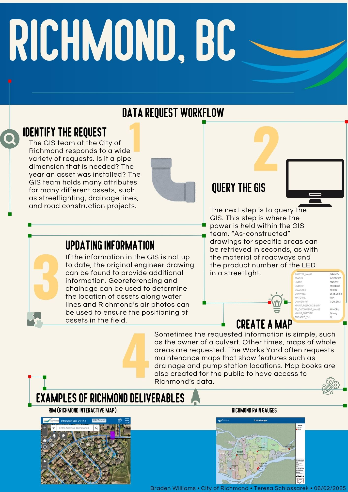

Supporting infrastructure and sustainable planning through advanced geographic analysis.
View My WorkI'm a GIS technician and recent graduate of the Advanced Diploma in Geographic Information Systems at BCIT. With a background in English Literature from UBC and experience in music instruction, I combine analytical thinking with creative problem-solving. I am particularly interested in using GIS to support sustainable planning, infrastructure improvement, and public engagement.

From April to June 2025, I worked as a GIS Intern with the Engineering & Public Works department. My work focused on data input, migration, and cleaning for utility asset datasets, including stormwater, sewer, water, and street lighting systems. I conducted thorough QA/QC checks to ensure accuracy and topological integrity of spatial data using ArcMap, ArcGIS Pro, and Infor Public Sector.
Made using QGIS with data from the BC Government Open Data Portal and Islands Trust. Vertical exaggeration = 2 to emphasize topography.
An app created at BCIT using Esri's Experience Builder allowing users to report incidents and analyze crime data trends from 1–10.
Displays the growth of bike infrastructure in Vancouver before and after the year 2000, highlighting urban sustainability.
When I'm not mapping, I'm playing. Explore my session guitar work and latest performance videos.
Go to Guitar PortfolioAvailable for GIS analysis projects, data management, and cartographic design.